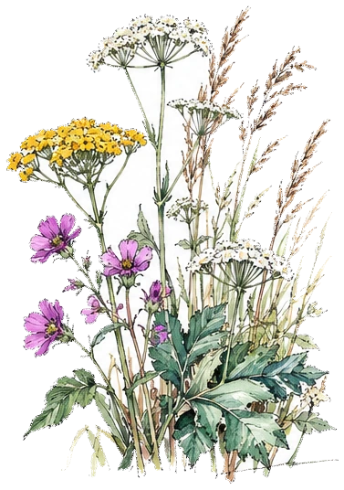

Les associations
Six associations pour protéger le vivant
Chaque association a son terrain, son espèce, ses combats. Nous venons les rencontrer, donner un coup de main et raconter ce qu’elles font.

Les associations
Chaque association a son terrain, son espèce, ses combats. Nous venons les rencontrer, donner un coup de main et raconter ce qu’elles font.
